Local baseline and modified homepage, 6 October 2026. Desktop captures use 1440 × 1000, matching scroll positions and settled camera progress. Mobile uses 390 × 844; tablet uses 834 × 1112. Nothing is masked. Ambient animation timing can vary. The small Cookie choices control is the intentional new interface element; city source, geometry and imagery are unchanged.
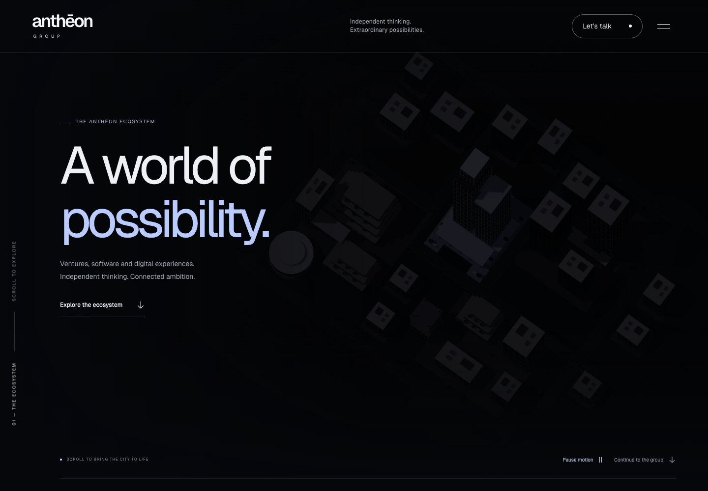
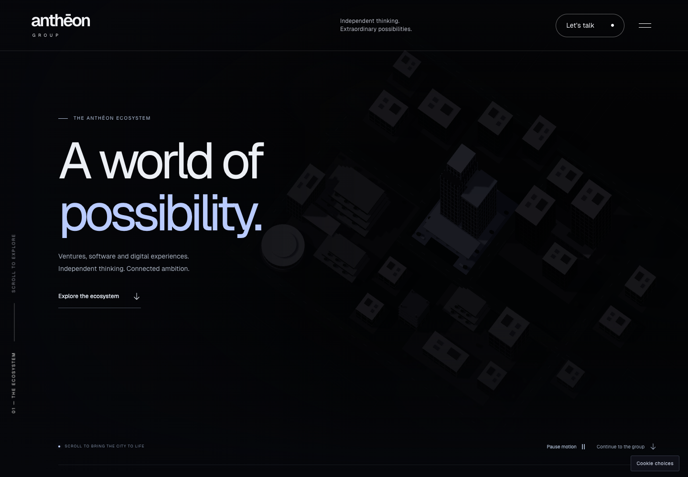
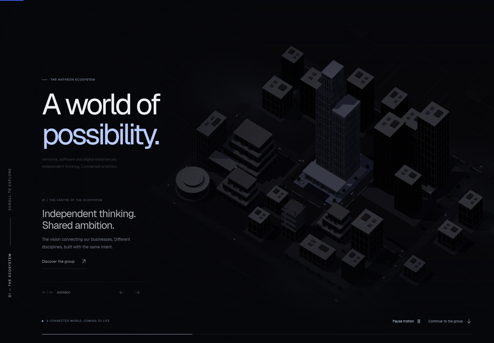
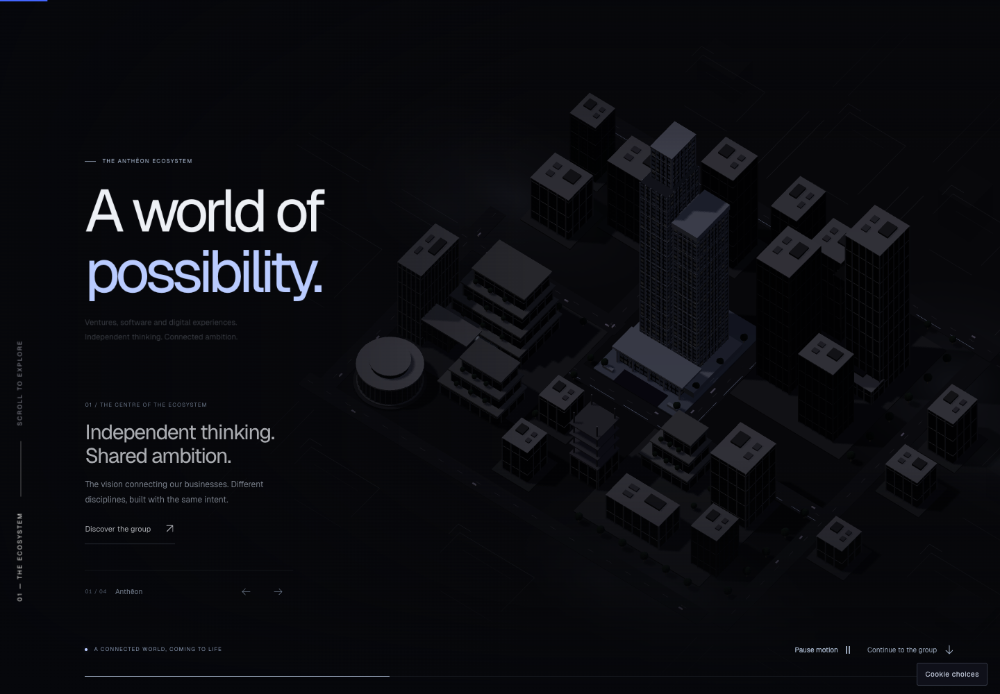
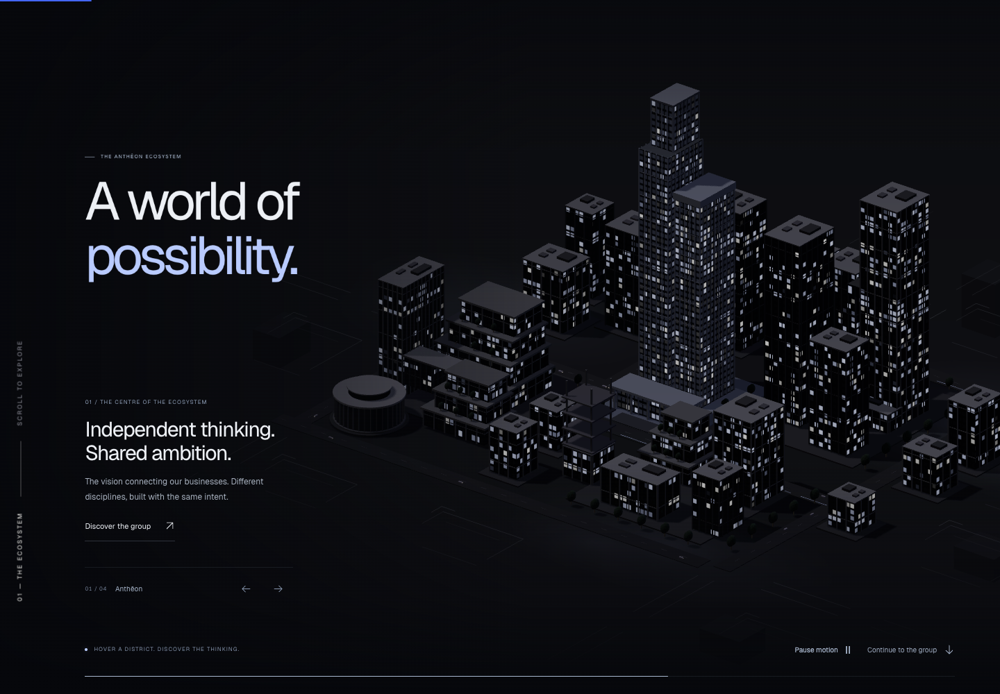
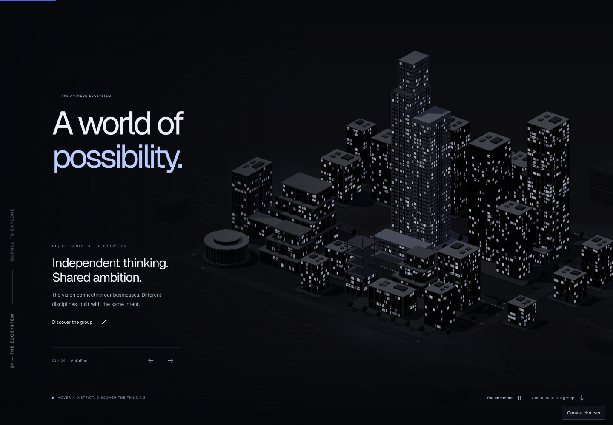
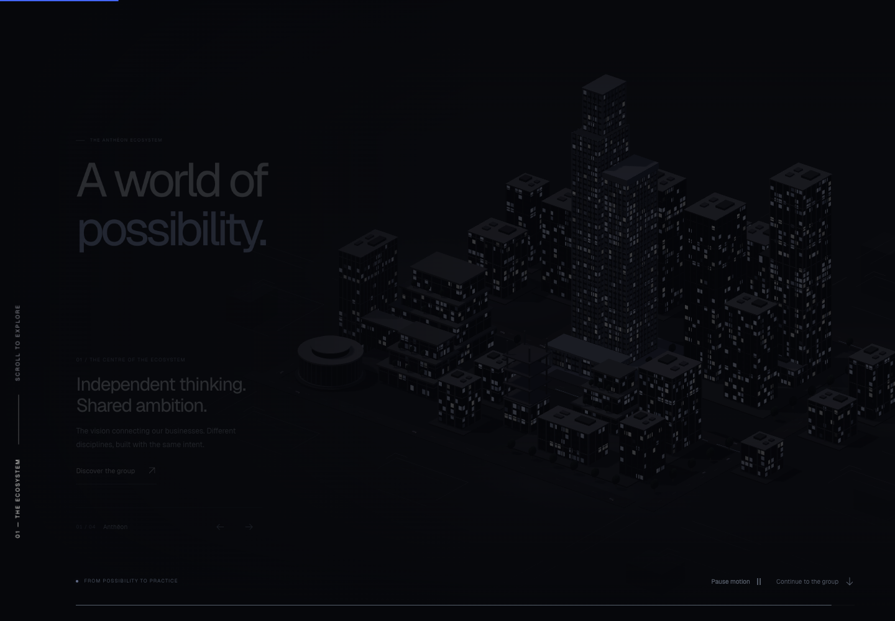
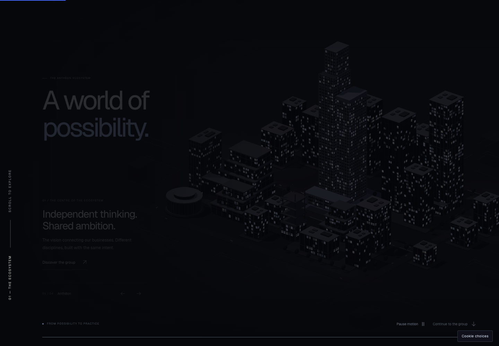
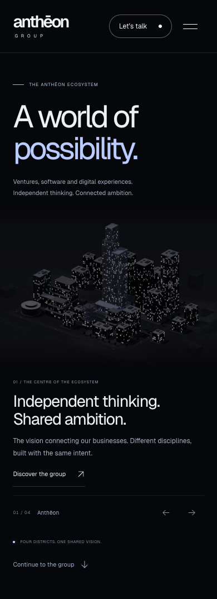
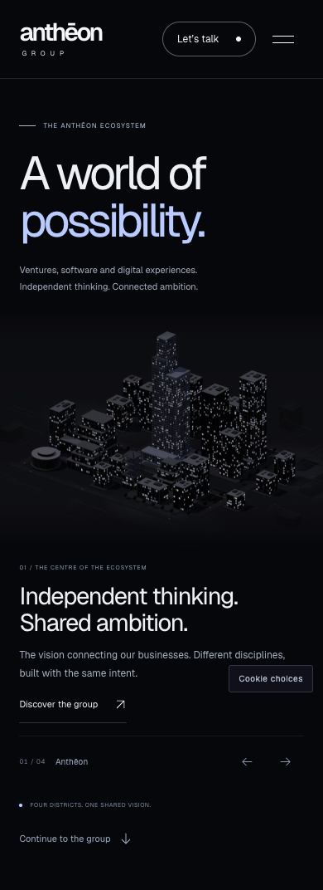
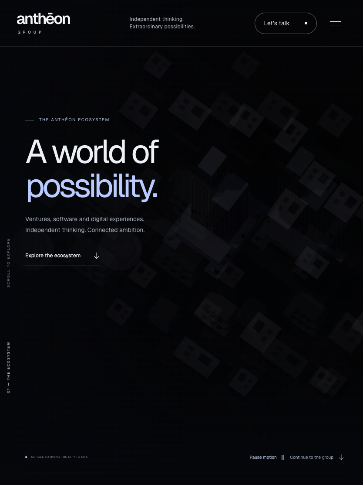
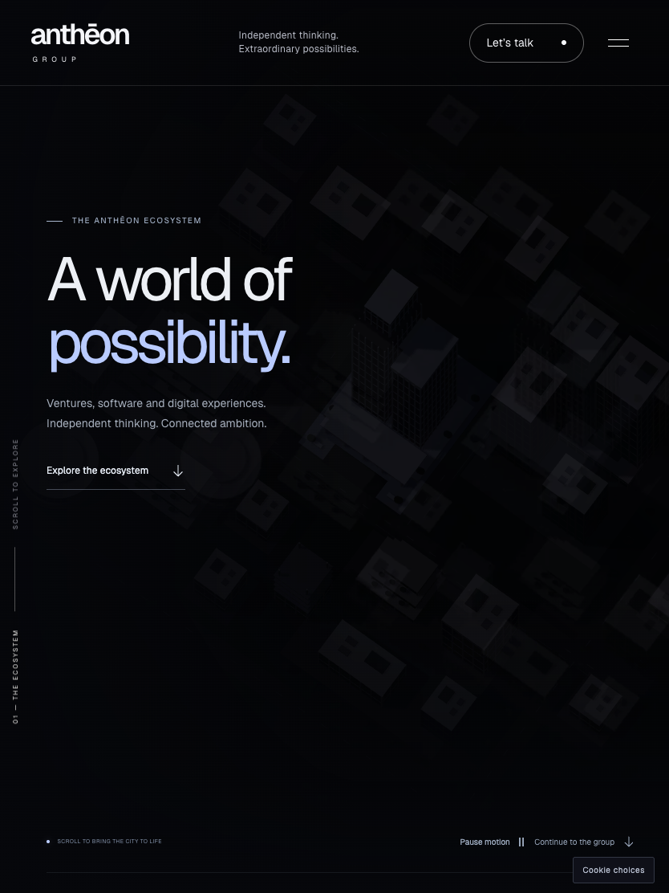